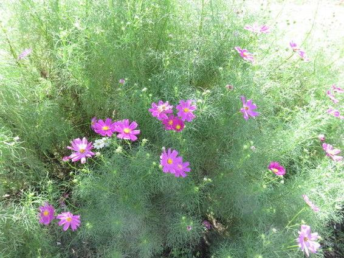

| 君に会えない日曜日: 心優しき戦士たち。さあ、旅のはじまりです | |
| 和田明男 | |
| (2017) | |
君に会えない日曜日
和田明男
はじめに
川の流れでさえ、逆流はできない。
まして、時の流れは、誰にも戻せない。
誰にでも、戻りたい「時」や「場所」があるにも関わらず。
「人は、辛い仕事をして、なぜ生きるのだろう？」
そう疑問に思ったのは、小学生の半ばだった。
幼いころより、人一倍内気で、初対面の人とは話ができない子供だった。
盆や正月に親類があつまり、同世代の従兄弟たちとも
打ち解けて遊ぶことはできず。
親の世代は、兄弟が多い時代で、
母は六人姉妹、それぞれに二人から四人の子供がいたので、
帰省した時には子供たちで賑やかだった。
そんな中で、僕は母の背中に隠れているか、
一人で、砂でもいじっているか。
「いることが、わからない子」
と言われていた。
ちょっとしたことで、よく泣いた。
小学校になると、子供ながらに
生きていくことの辛さを感じるようになった。
父は、電気製品の小売店舗を経営し、
母は、経理や接客をしていていた。
景気がいい頃には、従業員を五人ほどは雇っていた。
社長の父は無愛想で、客相手には不向きな人だった。
母は、中卒で住み込みで働きに出ていた苦労人であり、
愛想が良く接客がうまかった。
二人の背中をみては、
子供ながらに、仕事をして生きていくのは
大変なことなのだ、と感じ取っていた。
「大人になれば、働く理由も意味も分かるに違いない
そうでなければ、辛いのに仕事ができるわけがない」
そう思いつつ、
「なぜ、人は生きるの？」
という問いは、禁句のように思え、大人に尋ねることはできずにいた。
「自分も大人になれば、わかるに違いない」
と、心に秘めていた。

子供時代の記憶は、甘くやわらかく、
親の庇護は、温水プールのぬるま湯のように、
僕を包んでくれていた。
だが、優しい時代は続かず、やがて、激流に泳ぎ出す時は来た。
社会に出ると夢から覚めたように、生きる理由を問う余裕も
なくなっていた。
再会
風に運ばれたのだろう、褪せた銀杏の葉が
地下街の歩道、家路を急ぐ人々を静かに見つめている。
街はもうじき冬の彩りだ。
ショーウィンドウも通路も、金や銀、きらきらと細かに輝く、
歳末の飾り付けが始まっている。
季節より早く、街は、人は流れている。
出先から会社に戻る足を早めて僕は、
地上への階段を駆け登ろうと、ふと見上げた瞬間、
視線を奪われてしまった。
「あれ、どうしたの......」
ただ懐かしかった。三年前と変わらない微笑み。
下心なんてなかったけれど、今はどんな毎日を送っているのか、
話をしたくて、君を喫茶店に誘わずにおれなかった。
白熱の照明が暖かそうな店に入ると、
漂うコーヒーの香り。
半分ほど埋まった席から、幾つかの視線を感じる。
きっとお似合いに見えるんだろうな、シャクだけど。
窓際に向き合って座ると、
あの頃より、口紅が落ち着いた色になって、
白い肌は相変わらずだけど、目尻からこみかみにかけて
微かに肌がくすんでいる。
君はレモンティー、
僕はホットコーヒーとミックスサンドを頼んだ。
今日も残業だから、なんて言って。
「あれから一年半かな」
僕は近況を話しながら、初めて遇った時の事を思い出していた。
＊＊＊
その日、たまたま残業していた僕は、
五時以降に、中途採用の面接があることを、
上司から言付かっていた。
予定よりも十分ほど早くベルが鳴り、
受付カウンターには、小柄で色白の女の子が、
脱いだベージュのコートを左手に掛け、
伏目がちに立っていた。
少し栗色の髪は緩やかにウェーヴして
背中まで届き、前髪でまぶたが隠れる。
いまどきの女子大生の髪型だな。
応接室に案内し、役目を終えた。
面接を受けても、必ず入社するわけではないのだから、
これっきりの縁だろうなと、その時は思った。
＊＊＊
二つのカップと紅茶の入ったポットが届けられると、
君はレモンを絞り、淡い琥珀色の紅茶を注いだ。
コーヒーにフレッシュを落とし、
僕はそのまま、かき混ぜることもせず、
白い煙が茶色の空に広がるような模様を楽しんだ。
「今日はね、丸善に行って来たの。
可愛い童話の本があったのよ」
椅子にバッグと一緒に乗せてある、
紙の袋を指しながら。
そういえば、
僕が、君と話をするようになったのは、
本がきっかけだった。
＊＊＊
君が入社して、営業所に配属されたのは
三ヶ月経ってから。
初めての日、所長が紹介に来た。
後ろに束ねた髪型は社会人の自覚の現れかな。
色白の頬に少し赤味がさしている。
挨拶を終え、二人が部屋を出ると、
気の合った男性社員同士が、
「可愛い娘が来たな」
などと話している。
二十名足らずの営業所には
女子社員は三人しかいない。
その日から、君は職場の花になった。

＊＊＊
お茶を煎れる仕草が、木の実を運ぶリスのようで、
社内では制服だけれど、普段はふわっとした感じの洋服が多く、
赤いスカートの日は金魚みたい。
陰では「ハルカちゃんを守る会」なんてのが
面白がって作られていたんだな。
客先にコンピューターの使い方を教育する、
インストラクター要員として研修が始まり、
承知の上で選んだ会社とは言え、
法学部卒の君は戸惑っただろう。
ディスプレイに向かい、プログラムの開発に取り組む僕に、
「どの本を読んだらわかりやすいですか」
事務所の書架から選んだ数冊を手に尋ねた。
「今度探して来てあげるよ。それはどれも分かりにくいから」
君のためなら、思いっきり分かりやすい本を選んであげよう。
仕事が退けると僕は近くの大きな本屋で、
イラストの沢山入った、入門書を買い、手紙を添えて手渡した。
一週間ほどして、君は淡いピンクの封筒を持って来た。
「本、ありがとうございました」
いいよ、あげたんだから、
と断るけれど、きかないものだから、
仕方なく受け取った。
恩を売って関心を買おうなんて
見え透いた下心かな。
封筒を覗くと、お金だけでなく便箋もあるものだから、
その日は残業もほどほどに寮に帰って、手紙を読んだ。
（絵がたくさんあって、とても分かりやすくて、
楽しく勉強しています。
わたしはコンピューターのことは
わからないことばかりですので
いろいろと教えてください）
部屋で一人きり、ガッツポーズ。
その日から機会を捉えて君に接近した。
通勤経路を同じにしたり、
会社から帰った後を追っかけたりして、
ときどき一緒にお茶を喫んだ。
感動した本や、学生時代の日々、家族への思い、
とるに足らない話題でも楽しかった。
半年くらい続いただろうか。
でも一度も日曜日の誘いには乗ってくれなかったね。
やがて、君はインストラクターとして
全国を駆け回るようになった。
僕のシステム開発作業も納期が迫り、
残業で息つく暇もなくなってしまった。
暫くして、突然、君は惜しまれながら会社を辞めた。
僕には退職することも、数ヶ月後の結婚も告げずに。
＊＊＊
ミルクの煙が、カップの空を満遍なく覆う
わずかな間に、思い起こしていた。
出会い・再開・別れ。
ーー君は幸せなんだよねーー
僕はコーヒーを一口啜った。
「どう呼んだらいいのかな。もう苗字、変わっちゃったね」
君の配偶者は、僕と同期入社のアイツだった。
もう怒りはなく、新婚生活を冷やかそうと企んだだけ。
すぐ、アイツの名字を口にするだろうと高をくくっていたのに、
君は、ただ悪戯っぽい笑みを浮かべる。
「え、どうしたの、結婚したんだよね」
君は答えない。
「苗字、......になったんだよね」
アイツの姓を言っても首を横に振る。
からかうつもりが、からかわれている？
僕はためらいながら、一番可能性が少ないと思える答を口にした。
「間違っていたら謝るけど、もしかしたら、もう......じゃないの？」
「そう、元の名前なの」
「どうして......」
次の言葉を発するのに、僕には一呼吸必要だった。
「離婚したの？」
「そう......」
結婚してから一年足らず。
幸せな新婚生活を営んでいるとばかり思っていた。
アイツは平然と新居から通い、
噂の一つも耳にしなかった。
単に僕が、お人好しというだけかもしれないけれど。
「何で離婚なんてしたの、統計的には『性格の不一致』が一番多いっていうけど」
「あのね......」
胸のつかえが取れたように、話し始めた。
アイツは守銭奴だ、という。
自分の車やステレオ、付き合いにはお金を使うのに、
妻にはお金を渡さない。
食品も「もっと安いところを探して買え」とか、
チリトリを買うお金を欲しいと要求しても、
「今度帰ったときに家から持って来ればよい」と言う。
生活費もとことん削ろうとする。
そして、母親への依存心の強さ。
毎日電話をし、何事も母に相談しなければ決められない。
いわゆる「マザーコンプレックス」。
毎週のように自分の実家には帰るのに、
妻の実家には帰して貰えなかった。
遂に我慢できず、泣きながら母親に電話した。
「そんなに苦しいのなら帰っていらっしゃい」
半年足らずで離婚したという。
「私ね、前から英語の勉強をしたいと思っていたの。
今日、英会話教室の面接を受けて来て。
これも英語の絵本なの」
黄土色の紙袋から取り出した表紙には、
赤い背景に、茶色の熊と小さく白い猫が描かれていた。
明るく振る舞う姿が寂しさを紛らわすようで、余計に悲しい。
離婚率が高くなっているのは知っていたけれど、
幸せになっているとばかり思っていた君が、
そんな苦しい目にあっていたとは。
皆んな平気な顔して生活しながら、
重荷を背負って遠い道を歩いているんだ。
一生連れ添おうと心に固く決め、神にまで誓ったのに、
世間体も安定した生活も捨てて別れる。
その気持ちが僕にはまだわからないでいた。
また会う約束をして店を出て、
人波に消えるまで小さな背中を見送った。
行き交う人の誰も君の悲しみに気付かないけれど、
僕だけは、少しは理解してあげようと思った。
季節は流れて
再会から、幾つかの季節が流れた。
休日の地下街は沢山の人で賑わっている。
「ねえ、やっぱりウエディングドレスは純白がいいよね、純白」
ショーウィンドウを見ながら、君がいう。
純白は初婚しか着れないんじゃなかったっけ？
「そうだ、家でね、猫を飼ってたの、
名前がゴンタロウっていって。
一年くらい前だったかな」
なぜ突然「猫」なんだろう...。
「シャム猫と、日本の猫と混血みたいで、
片方の目がブルーで、もう片方がブラウンなの。
とってもプライドが高くて、カツオブシなんて食べないのよ。
純白とは正反対の真っ黒で」
ここでやっと「ウエディングドレス」と
「猫」の関連が分かったような気がする。
「ゴンタはね、甥っ子たちが拾ってきたの。
でもお姉さんの所では飼えないから、家で飼って欲しいって。
最初一ヶ月位は毎週会いに来てたんだけど、
だんだん来なくなって、それからもう、
お母さんに任せっきりよ。
雌なのにゴンタロウなんて男の名前つけられて、迷惑な話よね」
僕は相槌を打った。そりゃ迷惑だ。
僕にも、もし「花子」なんて名前付けられたら、舌でも噛み切りたくなる。
「でね、ゴンタはある日、いなくなっちゃって。
お母さんが近くの国道で、轢かれた猫を見つけたの。
たぶんゴンタロウだろうって。
甥達にはショックだから内緒にして。
わたし、その夜思ったの。
ゴンタロウ、何処に行っちゃったんだろう。
どこか遠い遠いところに行ったのかな。
死んだらどうなるんだろう」
瞳がうるんでいる。結婚衣装を見ながら
こんな話をする君は、やっぱりちょっと変わっていると思う。
でも口数が少ない僕としては、とても助かる。
それがちょっと悲しい話であっても。
早春の風が吹く日曜日。君は再就職し、
多忙な二人が会えるのは週末だけになった。
紆余曲折あったけれど、来週には結婚を控え、
今日は独身最後のデートなのだ。
特にこの数週間は、式の打合せやら、
引越しの支度や旅行の準備で息つく暇も無かった。
でも、もうあと一週間したら、二人の生活が始まる。
そうしたら少しはのんびりできるかな。
君が降りる駅、改札まで見送った。
いつもなら、僕は電車の中、君はホームで手を振るのだけれど、
今日はちょっと特別。
君は、一度振り返り、軽く頭を下げ、やがて視界から消えた。
晴れ上がった空が、二人の門出を祝っているようで、
式場では、準備の人々がピンと張られた糸のよう、
触れると高い音を出し、切れてしまいそうな雰囲気で動いていた。
玄関の内で着付けの先生に逢い、君の事を尋ねた。
「もう、来ていますか」
先に着いて準備を始めている筈だった。
「まだ見えていないんですよ。
もう準備せにゃならんのにね」
先生は少し眉間に皺を寄せて答えた。
おかしい、何かあったのだろうか...。
暫くして、到着した知らせが入った。
車で来る途中、事故に遇ったため遅れたのだが、
幸い軽傷で式は挙げられるという。
心配に思ったけれど、
準備中なのだ、邪魔しない方がよいだろう、
と早る心を抑えた。
時計の長針が半周した頃、
母が控室に飛び込んで来た。
「ハルカさんが倒れたの。
いま救急車を呼んだところよ」
駆けつけると、純白の衣装に身を包んだ君は、
ソファーに寝かされていた。
「ちょっと無理しちゃったみたい。
でも大丈夫だよ......」
まもなく、 遠くからサイレンが聞こえ、君は運ばれた。
すぐに後を追った。
「手術中」の赤いランプが消えるまでの三時間が、
その何倍にも感じられた。
皆黙りこくっている。
何万メートルの海底よりも、暗く重い空気が
消毒の臭いと共に満ちていた。
扉の向こう、君は生と死の狭間を往来している。
幸せになろうと頑張って来たんだ。
今度こそは本当に幸せになれる筈だよね。
ランプは消え、灰色の扉から、
グリーンに身を固めた外科医が現れ、
視線を落としたまま、首を横に振った。
君のお母さんは、声をあげて泣き出した。
抱き支えるお父さん。
僕には、悪い夢としか思えない。
君が死んでしまうなんて。
扉の陰に隠れているんだろう。
ねえ、早く出て来なよ。
一生、大切にするからさあ...。
悪夢は醒めなかった。
白いシーツに包まれた君は、
もう何も言ってくれない。
外傷はかすり傷程度であったけれど、
肋骨が折れ、肺に達していた、という。
残されたのは、悲しみに沈んだ君の家族と、
婚約者を失った失意の僕と、
純白のドレスに包まれた君の亡骸と...。
晴れの日に集った筈の親戚は、
白いネクタイを黒に締めなおすことになった。
葬儀が終わり、君はひとつまみの灰になり果てた。
家族の意向で、ウエディングドレスを着けたままの火葬。
真っ白なドレスが紅蓮の炎に包まれ、
若く白くみずみずしかった肌が焼けただれてゆく。
それは脳裏に展開される僕の妄想であったけれど、
余りに鮮やかだった。
さよならをもう一度
時を経ても、君が死んだという事実を、
僕は未だに信じられないでいた。
と言うより、受入れられないでいた。
夜には君からの電話を待ち、
道行く人に君の面影を探してしまう。
家族や友人の慰めは、ただ虚しいだけだった。
お通夜、葬儀、慌ただしくしていた数日はよかった。
心を紛らわすものが無くなると、
すべてが君のことで一杯になる。
「忘れよう」とすれば、逆に君を思い出すことになるのだ。
ならば最初から君はいなかったのだ、と思おうとしてみても、
共に過ごした日々は嘘にならない。
出会ったとき、プロポーズしたとき、君の笑顔...。
思い出が美しいほど、もう手が届かない今が悲しくなる。
結婚の為の休暇を、そのまま有給休暇に振り替えて、
数日の間会社を休む僕に、同僚が心配して電話をかけてきた。
「女なんて彼女だけだけじゃないさ。
人類の半分は女なんだぜ。元気出せよ」
お前に俺の気持ちがわかるか、と言う気力もなかった。
この地球上、どこをどう探しても、君は見つからない。
居るはずのない君を追いかけ、
やがて君がいない現実を受け入れられるようになって来た頃、
僕の中に新たな感情が芽吹いてきた。
君と一緒に暮らすことが、僕の今までの生きる目的だった。
その為に朝起き、歯を磨き、会社に出かけた。
その為に働き、食事をし上司にも頭を下げてきた。
飲みたくもない酒を飲んで顧客との人間関係を保ち、
疲れた体を布団に沈めるのも、
君と共に生きてゆけると思ったから。
ならばこれからの僕はどうだ。
生きてゆく意味がないのではないか。
この短い休暇が終われば、僕はまた仕事に戻らなければならない。
一体何の為に、働いて生きて行くの？
一体何の為に...。
結婚式、新婚旅行、新しい住まい、
何もかも準備してあったのに、
全てが不要になってしまった。
僕自身もこの世には不要の存在なのだ。
君のいない世界に生きてゆくことは苦痛でしかない。
そして、今日も日曜日。明日、僕は三十になる。
予定通り行けば、僕と君はハネムーンを終え、
夫婦としての日常生活が始まる日でもあった。
来て欲しい君が来なくて、来てほしくない誕生日が来て...。
僕は無性に怖かった。人生って、こんな事の繰り返しなのだろうか。
「君のところに行こう」
心は暗く沈んだまま、僕の足は、一週間前の事故現場へ向かっていた。
最後に、君が事故を起こした場所を訪れておきたかった。
ここで事故を起こさなければ、二人は定められたレールを、
走り続けることが出来たはず。
何の変哲もない県道は、事故の形跡はほとんど無く、
補修中のガードレールだけが、わずかに語る。
うららかな日差しに包まれた、休日の午後。
僕はふと、二つ目の角に、黒いものを見つけた。
遠目にそれは、黒いゴミ袋のように見えたが、
やがて、黒い猫が日溜まりにうずくまっているのだと分かった。
大きく伸びをし、こちらを振り向いた、
その目は、片目はブラウンでもう片方は、ブルーだった。
死んだ筈の猫を、君は見つけ、そしてハンドルを切り損ねたのだ。
何の証拠もないけれど、僕はそう思った。
猫に向かって僕は、歩きだした。
日差しの中、猫はゆっくり角を曲がった。
追うと、そこに姿はなく、町の児童公園があった。
長く手入れがされていないらしく、
雑草が伸び放題になって、足を踏み込むと、
膝に届きそうな位だ。
猫の姿はない。
突然、草むらの陰から、三匹の猫が飛び出した。
まだ小さな黒色のと白いの。続いてさっきの猫。
おどすような鳴き声で、二匹を追いかけ、
時々追いついては喉元に噛みつく。
小さいのは振り切って、また逃げる。
公園狭しと駆け回って、姿を消したかと思うと、
また草かげから現れ、追いかけっこを始める。
黒色のは太って強そう。
白いのは弱々しい、よく捕まっては、組み伏せられる。
しばらく見ていると、それは喧嘩ではないとわかった。
大きい黒いのは、決して本気ではないから。
親猫が子供を鍛えているのだ。
ゴンタロウは姿を消してから、子供を産み、
この公園で子供を育てていた。
こんなにも逞しく。
カツオブシも食べないプライド高かった猫が、
泥まみれになって生きていたんだ。
お前は猫だから、一生懸命生きるだけでいいけど、
僕は人間だから、見つけなければならない。
何の為に生まれ、なぜ生きるか、
そして、どんなに苦しくても生きなければならないのはなぜか、
ということを。
「また、来るからね」
児童公園に背を向け、僕はもう少し生きてみようと思った。
ここで死んでは、あの猫にも笑われる。
もっとも笑っている猫なんてみたことないけど。
君に逢えなくなった日曜日。
僕は「なぜ生きるか」の問いに向かって、
やっと一歩を踏み出した。
おわりに
「人類の歴史は、闘争の歴史」
と言われる。
それも、そのはず、人類と言っても動物なのだから、
「弱肉強食」の世界に生きている。
強い者が生き残り、弱い者は死に絶える。
それが、生き物の世界だ。
生き残るのに、甘えや優しさは必要ない。
だが、生物学的には、人間も生き物であるけれど、
強者が弱者を食い物にするばかりではない。
他者の痛みを想像できる。
強者も弱者をいたわって、共に生きられるのが人間だ。
ただ、人間の歴史を見ると、
「強者が弱者を支配する」歴史だった。
王の子供に生まれた者は、やがて王になり
奴隷の子供に生まれたものは、奴隷であるしかなかった。
時代は変わり、
インターネットで世界がつながった。
知識や情報は、人から人へ、瞬く間に伝わる。
誰でもが、求めさえすれば、
貧富や貴賤の格差を無くすことができる。
しかし、現実に、そうなっているか？
インターネットは、スマートホンの普及によって
日本の国民の、ほぼすべてに行き渡っている。
それであるのに、非正規雇用労働者は薄給にあえぎ、
正規雇用者も、過重な労働で過労自死を選ぶほど疲弊している。
その人が、その人らしさを保ちながら、
豊かに生きることが、何とかできないだろうか。
自身が、精神的にそれほど強くない私は、
心優しい人ほど、苦しんで生きている現実を目にした。
長年、情報技術開発に携わる者として、
インターネットを中心とする情報技術が、
弱者やマイノリティと言われる人の
助けになるような活動をしたいと思い至った。
今回、二十年前以上前に書いた掌編小説を、再び、世に出すことを通じて、
初心を思い出すと共に、
誰でもが自己を表現して、健やかに豊かに生きる道があるのだ、
ということを示したい。
「心優しき戦士のためのネット勝ち残り戦略」という
メール講座では、日々進歩する情報技術を活用する方法や
心構えをお伝えしている。
電子出版のノウハウや、ネット・ＳＮＳの活用法など、
興味や関心のある方は、登録して頂けば、有益な情報をお届けする。
登録者限定特典として
「あなたも本が出せる！ 電子書籍、速攻出版術」
という電子小冊子をお渡ししたいと思う。
詳しくは、次のフォームから請求して欲しい。
特典請求フォーム
著者略歴
和田明男（わだ あきお）
名古屋工業大学情報工学科を卒業後、一貫してＩＴエンジニアの道を歩む。
主な勤務地は、名古屋・富山・福井・大阪・愛知・岐阜。
ＩＴエンジニアとして、三十年を越えるキャリアを持つ。
大型コンピューターからスマートホン・ＩＯＴまで、
常に、第一線で接する傍ら
「優しい人こそが豊かに生きられる情報社会」を提言する。
信条は浄土仏教に由来する「自利利他」。
【運営サイト】
心優しき戦士のためのネット勝ち残り戦略
https://packey.net/